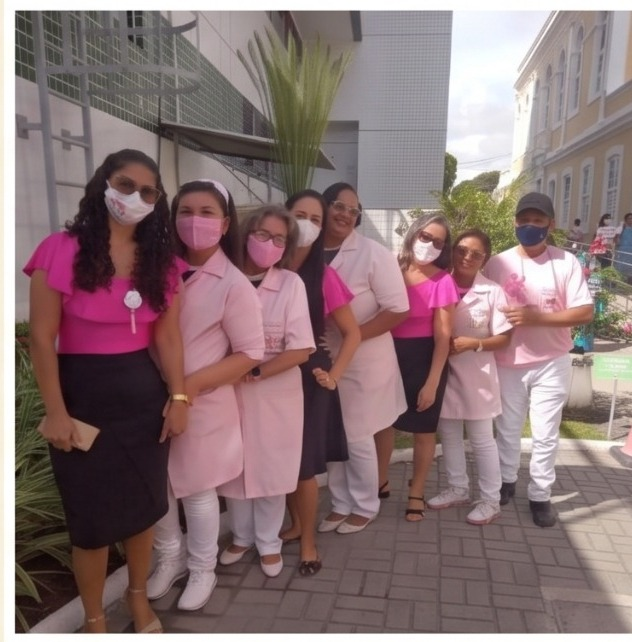

Ação 01
Apoio e Acolhimento
O Projeto Lange busca estar presente para pacientes oncológicos e suas famílias, oferecendo escuta, carinho e apoio durante momentos difíceis.
“Ninguém enfrenta o câncer sozinho. Estamos aqui para caminhar lado a lado.”